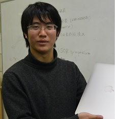

吉川 智己

| 研究テーマ | 光電子分光におけるトポロジカル物質のスピン・電子状態密度の研究 |
|---|---|
| 出身 | 福井 |
| 卒業論文題目 | トポロジカル絶縁体Bi2Te3における表面光起電力効果とディラック電子ダイナミクス |
| 修士論文題目 | トポロジカル絶縁体における表面光起電力効果とキャリアダイナミクス |
| 原著論文 | 3. T. Yoshikawa, V. N. Antonov, T. Kono, M. Kakoki, K. Sumida, K. Miyamoto, Y. Takeda, Y. Saitoh, K. Goto, Y. Sakuraba, K. Hono, A. Ernst, and A. Kimura "Unveiling spin-dependent unoccupied electronic states of Co2MnGe (Ga) film via Ge (Ga) L2,3 absorption spectroscopy" Physical Review B 102, 064428 (2020). 2. T. Yoshikawa, K. Sumida, Y. Ishida, J. Chen, M. Nurmamat, K. Akiba, A. Miyake, M. Tokunaga, K. A. Kokh, O. E. Tereshchenko, S. Shin, and A. Kimura "Bidirectional surface photovoltage on a topological insulator" Physical Review B 100, 165311 (2019). 1. T. Yoshikawa, Y. Ishida, K. Sumida, J. Chen, K. A. Kokh, O. E. Tereshchenko, S. Shin, and A. Kimura "Enhanced photovoltage on the surface of topological insulator via optical aging" Applied Physics Letters 112, 192104 (2018). |
| 国際学会 | 12. 学会名：The 19th International Conference on Solid Films and Surfaces 題目：Unvailing spin-depend unoccupied electronic states of Co2MnGe(Ga) film 場所：Hiroshima, Japan (2019.10) ポスター発表 11. 学会名：International Young Researchers Workshop on Synchrotron Radiation Science 2019 題目：A bi-directional surface photovoltaic shift on the topological insulators 場所：Hiroshima Univ., Japan (2019.9) ポスター発表 10. 学会名：The Second International Workshop Emergent Condensed-Matter Physics ECMP2019 題目：A bi-directional surface photovoltaic shift on the topological insulators 場所：Higashi-Hiroshima Arts & Culture Hall "Kurara", Japan (2019.3) ポスター発表 9. 学会名：APS March Meeting 2019 題目：A bi-directional photovoltaic shift on the surface of topological insulators 場所：Boston Convention and Exhibition Center (BCEC), the USA (2019.3) 口頭発表 8. 学会名：International workshop "Variety and universality of bulk-edge correspondence in topological phases: From solid state physics to transdisciplinary concepts" [ BEC2018X ] 題目：Enhanced photovoltage on the surface of topological insulator via optical aging 場所：Univ. of Tsukuba, Japan (2018.12) ポスター発表 7. 学会名：2018 Japan-Korea Student Workshop 題目：A Bi-directional Surface Photovoltaic Shift on Topological Insulators 場所：Hiroshima Univ., Japan (2018.11) 口頭発表 6. 学会名：International Workshop on Trends in Advanced Spectroscopy in Materials Science (TASPEC) 題目：A bi-directional surface photovoltaic shift on a topological insulator 場所：Hiroshima Univ., Japan (2018.10) 口頭発表 5. 学会名：10th International Symposium on Ultrafast Surface Dynamics (USD10) 題目：A Bi-directional Surface Photovoltage of Topological Insulator 場所：Inzell, Germany (2017.6) ポスター発表 4. 学会名：Symposium on Surface Science & Nanotechnology -25th Anniversary of SSSJ Kansai- (SSSN-Kansai) 題目：Ambipolar Surface Photovoltaic Shift of Bulk Insulating Topological Insulator Bi2Te3 場所：Kyoto, Japan (2017.1) 口頭発表 3. 学会名：2016 Japan-Korea Student Workshop 題目：Surface photovoltaic effect in the topological insulator Bi2Te3 場所：Hiroshima Univ., Japan (2016.11) 口頭発表 2. 学会名：Physics of bulk-edge correspondence & its universality From solid state physics to cold atoms International workshop (BEC2016) 題目：Surface photovoltaic effect in the topological insulator Bi2Te3 場所：Kyoto Univ., Japan (2016.9) ポスター発表 1. 学会名：15th International Conference on the Formation of Semiconductor Interfaces 題目：A photovoltaic shift of topological surface state in Bi2Te3 場所：International Conference Center Hiroshima, Japan (2015.11) ポスター発表 |
| 国内学会 | 13. 学会名：第34回日本放射光学会年会・放射光科学合同シンポジウム 題目：フルホイスラー合金Co2MnZ(Z=Ga, Ge)薄膜の非磁性元素サイトにおける磁気円二色性スペクトル 場所：広島大学（2021.1, オンライン） 口頭発表 12. 学会名：日本物理学会 2020年・秋季大会 題目：ホイスラー合金Co2MnGe(Ga)薄膜のGe(Ga) L2,3端における磁気円二色性スペクトルII 場所：熊本大学（2020.9, オンライン） 口頭発表 11. 学会名：第80回応用物理学会秋季学術講演会 題目：フルホイスラー合金Co2MnGe(Ga)薄膜のGe(Ga) L2,3端における磁気円二色性スペクトル 場所：北海道大学 (2019.9) ポスター発表 10. 学会名：日本物理学会 2019年・秋季大会 題目：希土類元素を含むディラック電子系の放射光ARPES 場所：岐阜大学 (2019.9) ポスター発表 9. 学会名：最先端光電子分光で拓く量子物質科学研究に関するワークショップ 題目：トポロジカル絶縁体Bi2Te3における両極性表面光起電力シフト 場所：広島大学 (2019.9) ポスター発表 8. 学会名：日本物理学会 2018年・秋季大会 題目：トポロジカル絶縁体における光エイジング効果と表面光起電力シフト 場所：同志社大学 (2018.9) ポスター発表 7. 学会名：第65回応用物理学会春季学術講演会 題目：A bi-directional surface photovoltage on the surface of topological insulators 場所：早稲田大学 (2018.3) 口頭発表 6. 学会名：日本物理学会 2017年・秋季大会 題目：トポロジカル絶縁体Bi2Te3における光エイジングと表面光起電力効果 場所：岩手大学 (2017.9) 口頭発表 5. 学会名：スタートアップ研究会 科研費基盤S 「トポロジカル相でのバルク・エッジ対応の多様性と普遍性：固体物理を越えて分野横断へ」 題目：トポロジカル絶縁体Bi2Te3における光エイジングと表面光起電力シフト 場所：筑波大学 (2017.6) ポスター発表 4. 学会名：科研費基盤研究会A (26247064) 第6回研究会 -トポロジカル相におけるバルク・エッジ対応の物理とその普遍性：固体物理から冷却原子まで- 題目：トポロジカル絶縁体Bi2Te3における両極性表面光起電力シフト 場所：筑波大学 (2017.3) ポスター発表 3. 学会名：日本物理学会 2017年・年次大会 題目：トポロジカル絶縁体Bi2Te3表面における非平衡キャリアダイナミクス 場所：大阪大学 (2017.3) 口頭発表 2. 学会名：日本物理学会 2016年・秋季大会 題目：トポロジカル絶縁体Bi2Te3における表面光起電力シフト 場所：金沢大学 (2016.9) 口頭発表 1. 学会名：第63回応用物理学会春季学術講演会 題目：トポロジカル絶縁体Bi2Te3における表面光起電力効果およびディラック電子ダイナミクス 場所：東京工業大学 (2016.3) 口頭発表 |
| 受賞歴 | 2. 賞名：Student Poster Award The Second International Workshop Emergent Condensed-Matter Physics ECMP2019 受賞年月：2019.3 1. 賞名：卒業論文発表優秀賞 受賞年月：2016.3 |